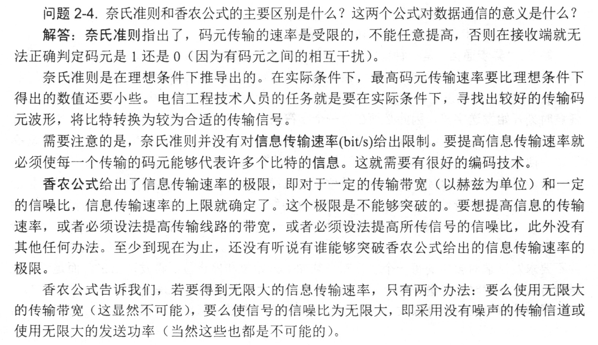

物理层 [physical-layer][edit]
物理层 [physical-layer][edit]
调制分为两大类: 基带调制: 仅对基带信号的波形进行变换, 使它能够与信道特性相适应. 变换后的信号仍然是基带信号. 把这种过程称为编码 [coding]. 带通调制: 使用载波 [carrier] 进行调制, 把基带信号的频率范围搬移到较高的频段, 并转换为模拟信号, 这样就能够更好地在模拟信道中传输 (即仅在一段频率范围内能够通过信道). 从信号波形中可以看出, 曼彻斯特 [Manchester] 编码产生的信号频率比不归零制高. 从自同步能力来看, 不归零制不能从信号波形本身中提取信号时钟频率, 这叫作没有自同步能力, 而曼彻斯特编码具有自同步能力. 从概念上讲, 限制码元在信道上的传输速率的因素有以下两个: 理想信道, 极限码元传输率 $2W$ 波特, 低信道下的极限数据传输率 带宽受限且高斯白噪声干扰的信道的极限数据传输速率 $C = W \log_2(1+S/N)$.
$S/N$ 为信噪比, 即信号平均功率与噪声平均功率之比, 位为分贝  基带传输: 计算机内部或在相邻设备之间近距离传输, 可以不经过调制就在信道上直接进行的传输方式. 频带传输: 对数字信号特定的频率的载波进行调制, 将其变成适合于传送的信号后再进行传输. 宽带传输: 借助频带传输, 可将链路容量分解成两个或多个信道, 每个信道可以携带不同的信号. $\gdef\spaces#1{~ #1 ~}$ 信道复用技术可分为: $$
\begin{gathered}
S \cdot T = 0, \quad S \cdot S = 1, \quad S \cdot \bar{S} = -1 \\
\Darr \\
S \cdot (S+T) = 1, \quad S \cdot (\bar{S}+T) = -1 \\
\Darr \quad\quad \qquad \quad\quad \Darr \\
S=1 \quad \qquad \quad S=0
\end{gathered}
$$ $\therefore$ 码片 $\cdot$ 收到的信号 $=\begin{cases} ~~~0 \spaces\Rarr \text{none} \\ ~~~1 \spaces\Rarr 1 \\ -1 \spaces\Rarr 0 \end{cases}$常用术语 [physical-layer-0001][edit]
有关信道的几个基本概念 [physical-layer-0002][edit]
调制 [modulation][edit]
基本的带通调制方法
数字信号编码方法 [encoding-method][edit]

信道的极限容量 [maximum-capacity][edit]
奈氏准则
(b/s) $=2W \log_2 V$.
$W$ 是理想低通道的带宽, 单位为 Hz. $V$ 表示每个码元离散电平的数目.
香农定理
(dB). 信噪比 (dB) $= 10 \log_{10}(S/N)$.
补充
信号传输方式 [transmission][edit]
信道复用技术 [multiplexing][edit]
频分复用
时分复用
统计时分复用
波分复用
码分复用